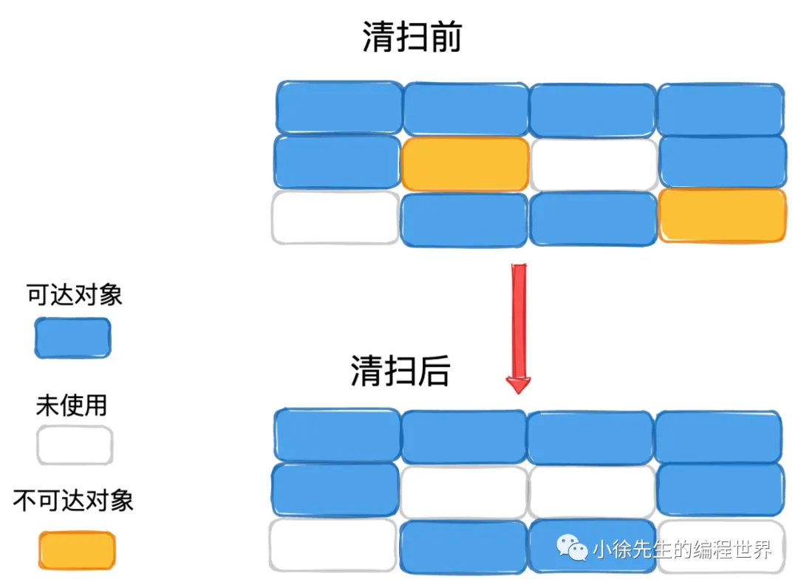
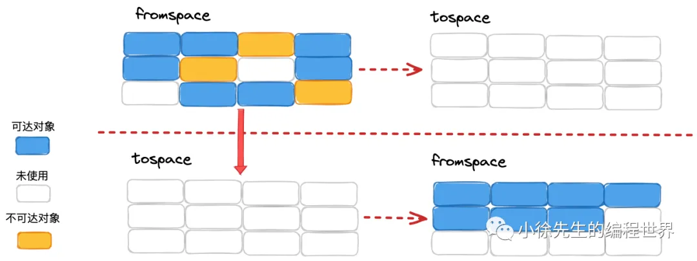
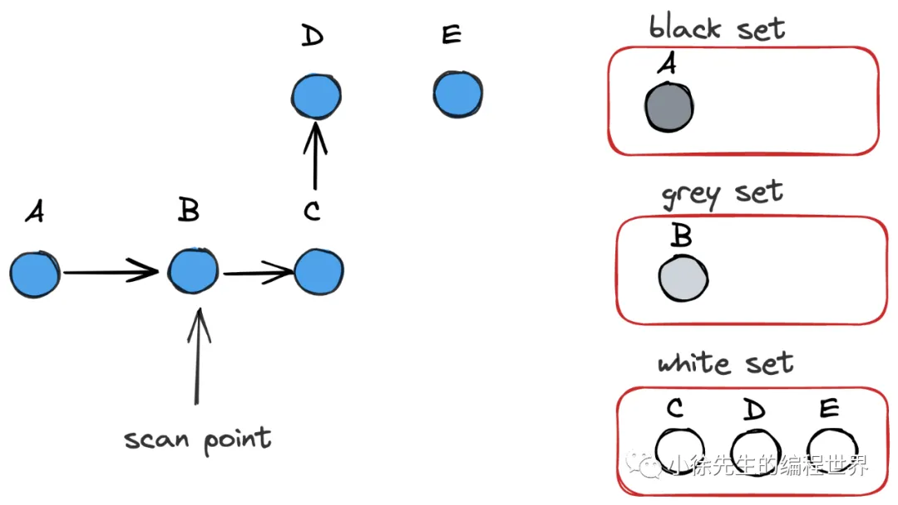
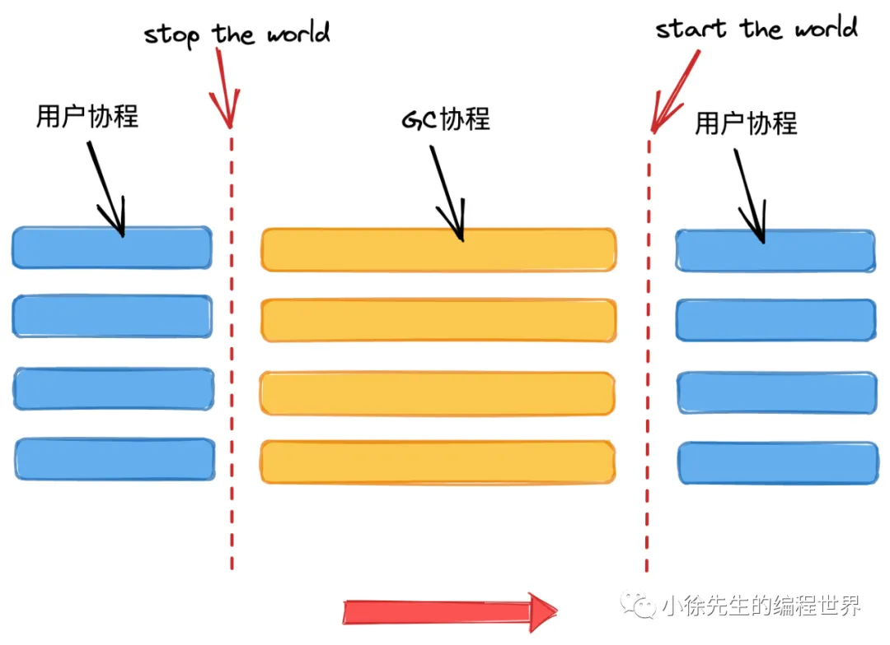
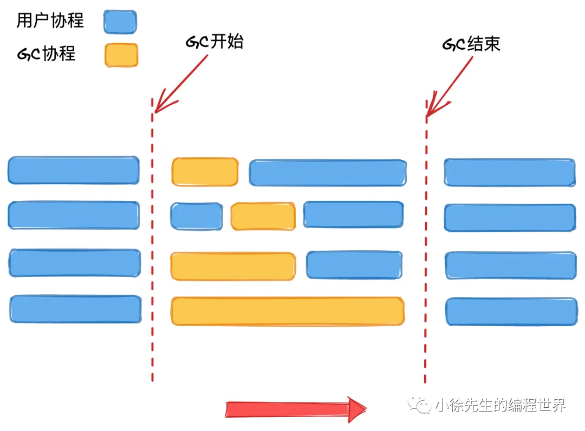
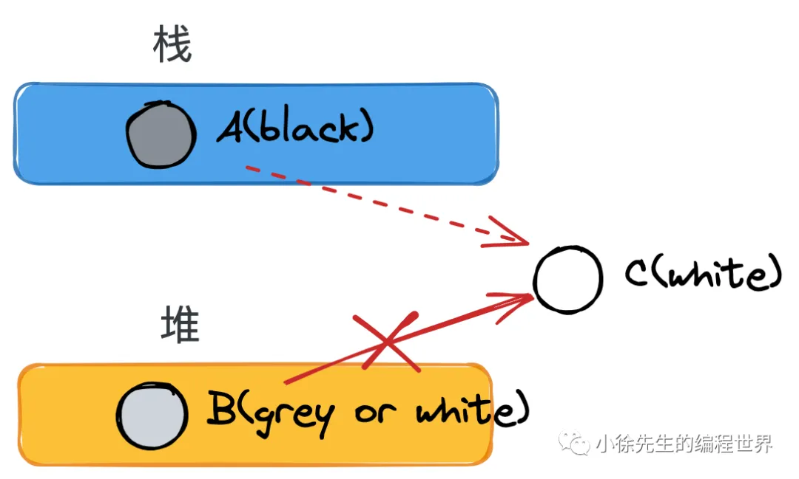
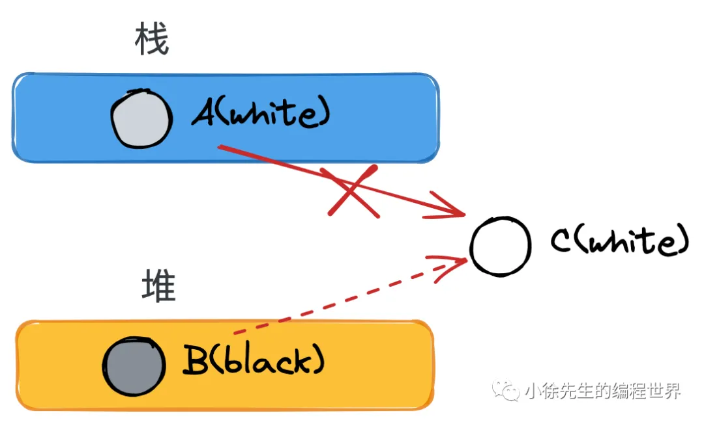
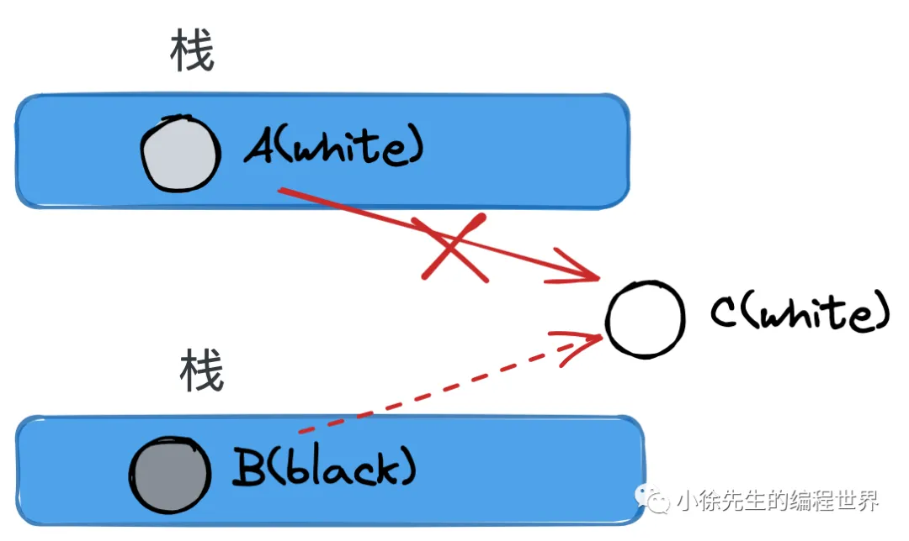

垃圾回收算法
背景介绍
垃圾回收（Garbage Collection，简称 GC）是一种内存管理策略，由垃圾收集器以类似守护协程的方式在后台运作，按照既定的策略为用户回收那些不再被使用的对象，释放对应的内存空间.
- GC 带来的优势包括：
- 屏蔽内存回收的细节
- 拥有 GC 能力的语言能够为用户屏蔽复杂的内存管理工作，使用户更好地聚焦于核心的业务逻辑.
- 以全局视野执行任务
- 现代软件工程项目体量与日剧增，一个项目通常由团体协作完成，研发人员负责各自模块的同时，不可避免会涉及到临界资源的使用. 此时由于缺乏全局的视野，手动对内存进行管理无疑会增加开发者的心智负担. 因此，将这部分工作委托给拥有全局视野的垃圾回收模块来完成，方为上上之策.
- 屏蔽内存回收的细节
- GC 带来的劣势：
- 提高了下限但降低了上限
- 将释放内存的工作委托给垃圾回收模块，研发人员得到了减负，但同时也失去了控制主权. 除了运用有限的GC调优参数外，更多的自由度都被阉割，需要向系统看齐，服从设定.
- 增加了额外的成本
- 全局的垃圾回收模块化零为整，会需要额外的状态信息用以存储全局的内存使用情况. 且部分时间需要中断整个程序用以支持垃圾回收工作的执行，这些都是GC额外产生的成本.
- 提高了下限但降低了上限
- GC 的总体评价
- 除开少量追求极致速度的特殊小规模项目之外，在绝大多数高并发项目中，GC模块都为我们带来了极大的裨益，已经成为一项不可或缺的能力.
下面对几类经典的垃圾回收算法进行介绍
标记清扫Mark-Sweep算法

- 蓝色 是还需要使用的变量
- 橙色 是已经不使用了但是房间还没打扫
- 白色 是打扫干净的空房间
- 标记出蓝色对象
- 清扫掉未被标记到的垃圾对象:橙色变白了
缺点:会产生内存碎片. 经过几轮标记清扫之后，空闲的内存块可能零星碎片化分布，此时倘若有大对象需要分配内存，可能会因为内存空间无法化零为整从而导致分配失败.
标记压缩Mark-Compact算法

在第二步”清扫“的同时还会对存活对象进行压缩整合，使得整体空间更为紧凑，从而解决内存碎片问题
标记压缩算法在功能性上呈现得很出色，而其存在的缺陷也很简单，就是实现时会有很高的复杂度.
半空间复制Semispace Copy

- 分配两片相等大小的空间，称为 fromspace 和 tospace
- 每轮只使用 fromspace 空间，以GC作为分水岭划分轮次
- GC时，将fromspace存活对象转移到tospace中.那么fromspace里面只剩下垃圾了,可以一口气清空.
- GC后，交换fromspace和tospace，开启新的轮次
显然，半空间复制算法应用了以空间换取时间的优化策略，解决了内存碎片的问题，也在一定程度上降低了压缩空间的复杂度. 但其缺点也同样很明显——比较浪费空间.
引用计数Reference Counting
- 对象每被引用一次，计数器加1
- 对象每被删除引用一次，计数器减1
- GC时，把计数器等于 0 的对象删除
然而，这个朴素的算法存在一个致命的缺陷：无法解决循环引用(只有两个对象在互相引用,但是实际上两个人都不被大部队需要了)或者自引用(没有别人需要了,但是一直无法被回收)问题.
golang中的垃圾回收
Golang 在 1.8版本之后，GC策略框架已经奠定，就是并发三色标记法+混合写屏障机制
三色标记法

Golang GC 中用到的三色标记法属于标记清扫-算法下的一种实现，由荷兰的计算机科学家 Dijkstra 提出，下面阐述要点：
基本概念
存活: GC开始时,有一组根对象roots,比如全局变量,当前正在运行的函数栈里的变量等.只要能顺着箭头,从root一路顺藤摸瓜找到的,就算是存活
指向:就是指针引用.而且是表层的指针引用,不会一直dfs下去
- 对象分为三种颜色标记：黑、灰、白
- 黑对象代表，对象自身存活，且其指向对象都已标记完成
- 灰对象代表，对象自身存活，但其指向对象还未标记完成
- 白对象代表，对象尙未被标记到，可能是垃圾对象
- 标记开始前，将根对象（全局对象、栈上局部变量等）置黑，将其所指向的对象置灰
- 标记规则是，从灰对象出发，将其所指向的对象都置灰. 所有指向对象都置灰后，当前灰对象置黑
- 标记结束后，白色对象就是不可达的垃圾对象，需要进行清扫.
并发垃圾回收

Golang 1.5 版本是个分水岭，在此之前，GC时需要停止全局的用户协程，专注完成GC工作后，再恢复用户协程，这样做在实现上简单直观，但是会对用户造成不好的体验.

自1.5版本以来，Golang引入了并发垃圾回收机制，允许用户协程和后台的GC协程并发运行，大大地提高了用户体验. 但“并发”是一个值得大家警惕的字眼. 用户协程运行时可能对对象间的引用关系进行调整，这会严重打乱GC三色标记时的标记秩序.
几个问题
golang并发垃圾回收可能存在漏标问题
在用户协程与GC协程并发执行的场景下，部分存活对象未被标记从而被误删的情况
-
条件：初始时刻，对象B持有对象C的引用
-
moment1：GC协程下，对象A被扫描完成，置黑；此时对象B是灰色，还未完成扫描
-
momen2：用户协程下，对象A建立指向对象C的引用
-
moment3：用户协程下，对象B删除指向对象C的引用
-
moment4：GC协程下，开始执行对对象B的扫描
-
由于GC协程在B删除C的引用后才开始扫描B，因此无法到达C. 又因为A已经被置黑，不会再重复扫描，因此从扫描结果上看，C是不可达的.
-
然而事实上，C应该是存活的（被A引用），而GC结束后会因为C仍为白色，因此被GC误删.
针对这个问题 屏障机制可以解决。
golang并发垃圾回收可能存在多标问题
在用户协程与GC协程并发执行的场景下，部分垃圾对象被误标记从而导致GC未按时将其回收的问题
- 条件：初始时刻，对象A持有对象B的引用
- moment1：GC协程下，对象A被扫描完成，置黑；对象B被对象A引用，因此被置灰
- momen2：用户协程下，对象A删除指向对象B的引用
上述场景引发的问题是，在事实上，B在被A删除引用后，已成为垃圾对象，但由于其事先已被置灰，因此最终会更新为黑色，不会被GC删除.
错标问题对比于漏标问题而言，是相对可以接受的. 其导致本该被删但仍侥幸存活的对象被称为“浮动垃圾”，至多到下一轮GC，这部分对象就会被GC回收，因此错误可以得到弥补.
Golang 垃圾回收如何解决内存碎片问题
标记清扫算法会存在产生“内存碎片”的缺陷
Golang采用 TCMalloc 机制，依据对象的大小将其归属为到事先划分好的spanClass当中，这样能够消解外部碎片的问题，将问题限制在相对可控的内部碎片当中
基于此，Golang选择采用实现上更为简单的标记清扫算法，避免使用复杂度更高的标记压缩算法，因为在 TCMalloc 框架下，后者带来的优势已经不再明显.
Golang为什么不选择分代垃圾回收机制
分代算法指的是，将对象分为年轻代和老年代两部分（或者更多）采用不同的GC策略进行分类管理. 分代GC算法有效的前提是，绝大多数年轻代对象都是朝生夕死，拥有更高的GC回收率，因此适合采用特别的策略进行处理.
然而Golang中存在内存逃逸机制，会在编译过程中将生命周期更长的对象转移到堆中，将生命周期短的对象分配在栈上，并以栈为单位对这部分对象进行回收.
综上，内存逃逸机制减弱了分代算法对Golang GC所带来的优势，考虑分代算法需要产生额外的成本（如不同年代的规则映射、状态管理以及额外的写屏障）Golang 选择不采用分代GC算法.
屏障机制
主要就是为了解决漏标问题
强弱三色不变式
漏标问题的本质就是，一个已经扫描完成的黑对象指向了一个被灰\白对象删除引用的白色对象. 构成这一场景的要素拆分如下：
（1）黑色对象指向了白色对象
（2）灰、白对象删除了白色对象
（3）12步中谈及的白色对象是同一个对象
（4）1发生在2之前
一套用于解决漏标问题的方法论称之为强弱三色不变式：
- 强三色不变式：白色对象不能被黑色对象直接引用（直接破坏1）
- 当你的代码试图执行 A.next = C（A黑，C白）时，强制把 C 涂成灰色
- 弱三色不变式：白色对象可以被黑色对象引用，但要从某个灰对象出发仍然可达该白对象（间接破坏了1、2的联动）
- 试图执行
B.next = nil（切断灰 B 对白 C 的引用）时，我强制把 C 涂成灰色
- 试图执行
插入写屏障
屏障机制类似于一个回调保护机制，指的是在完成某个特定动作前，会先完成屏障成设置的内容.
插入写屏障（Dijkstra）的目标是实现强三色不变式，保证当一个黑色对象指向一个白色对象前，会先触发屏障将白色对象置为灰色，再建立引用.
如果所有流程都能保证做到这一点，那么 3.1 小节中的（1）就会被破坏，漏标问题得以解决.
删除写屏障
删除写屏障（Yuasa barrier）的目标是实现弱三色不变式，保证当一个白色对象即将被上游删除引用前，会触发屏障将其置灰，之后再删除上游指向其的引用.
这一流程中，3.1小节的步骤（2）会被破坏，漏标问题得以解决.
混合写屏障
插入写屏障、删除写屏障二者择其一，即可解决并发GC的漏标问题，至于错标问题，则采用容忍态度，放到下一轮GC中进行延后处理即可.
然而真实场景中，需要补充一个新的设定——屏障机制无法作用于栈对象.
- 这是因为栈对象可能涉及频繁的轻量操作，倘若这些高频度操作都需要一一触发屏障机制，那么所带来的成本将是无法接受的.
- 栈（Stack）内存是绝对私有的，不能被跨栈引用。如果被跨站引用了，这个对象会被升级成堆对象
- 在这一背景下，单独看插入写屏障或删除写屏障，都无法真正解决漏标问题，除非我们引入额外的Stop the world（STW）阶段[暂停其他线程]，对栈对象的处理进行兜底。
- 为了消除这个额外的 STW 成本，Golang 1.8 引入了混合写屏障机制，要点如下：
【栈对象还是符合三色标记法的，引用对象还是会变成灰色】
- GC 开始前，以栈为单位分批扫描，将栈中所有对象置黑
- GC 期间，栈上新创建对象直接置黑
- 堆对象正常启用插入写屏障
- 堆对象正常启用删除写屏障
下面我们通过几个 show case，来论证混合写屏障机制是否真的能解决并发GC下的各种极端场景问题.
show case
堆对象删除引用，栈对象建立引用

- 背景：存在栈上对象A，黑色（扫描完）
存在堆上对象B，白色（未被扫描）
存在堆上对象C，被堆上对象B引用，白色（未被扫描） - moment1：A建立对C的引用，由于栈无屏障机制，因此正常建立引用，无额外操作
- moment2：B尝试删除对C的引用，删除写屏障被触发，C被置灰，因此不会漏标
一个堆对象删除引用，成为另一个堆对象下游

存在堆上对象A，白色（未被扫描）
存在堆上对象B，黑色（已完成扫描）
存在堆上对象C，被A引用，白色（未被扫描）
- moment1：B尝试建立对C的引用，插入写屏障被触发，C被置灰
- moment2：A删除对C的引用，此时C已置灰，因此不会漏标
栈对象删除引用，成为堆对象下游

- 背景：存在栈上对象A，白色（未完成扫描，说明对应的栈未扫描）
存在堆上对象B，黑色（已完成扫描）
存在堆上对象C，被栈上对象A引用，白色（未被扫描） - moment1：B尝试建立对C的引用，插入写屏障被触发，C被置灰
- moment2：A删除对C的引用，此时C已置灰，因此不会漏标
一个栈中对象删除引用，另一个栈中对象建立引用

- 背景：存在栈上对象A，白色（未扫描，这是因为对应的栈还未开始扫描）
存在栈上对象B，黑色（已完成扫描，说明对应的栈均已完成扫描）
存在堆上对象C，被栈上对象A引用，白色（未被扫描） - moment1：B建立对C的引用；
- moment2：A删除对C的引用.
- 结论：这种场景下，C要么已然被置灰，要么从某个灰对象触发仍然可达C.
- 原因在于，对象的引用不是从天而降，一定要有个来处. 当前 case 中，对象B能建立指向C的引用，至少需要满足如下三个条件之一：
I 栈对象B原先就持有C的引用，如若如此，C就必然已处于置灰状态（因为B已是黑色）
II 栈对象B持有A的引用，通过A间接找到C. 然而这也是不可能的，因为倘若A能同时被另一个栈上的B引用到，那样A必然会升级到堆中，不再满足作为一个栈对象的前提；
III B同栈内存在其他对象X可达C，此时从X出发，必然存在一个灰色对象，从其出发存在可达C的路线.
综上，我们得以证明混合写屏障是能够胜任并发GC场景的解决方案，并且满足栈无须添加屏障的前提.